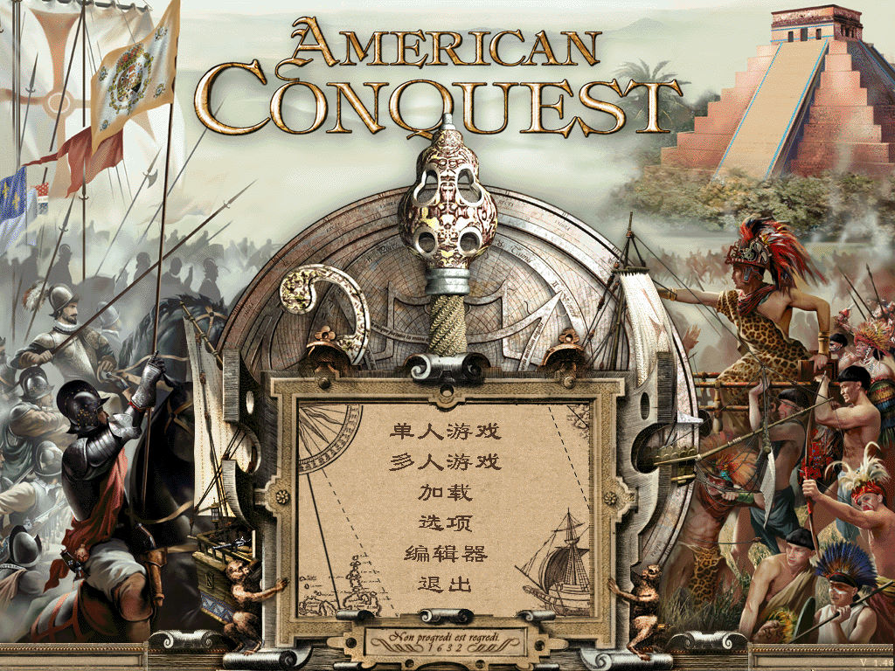
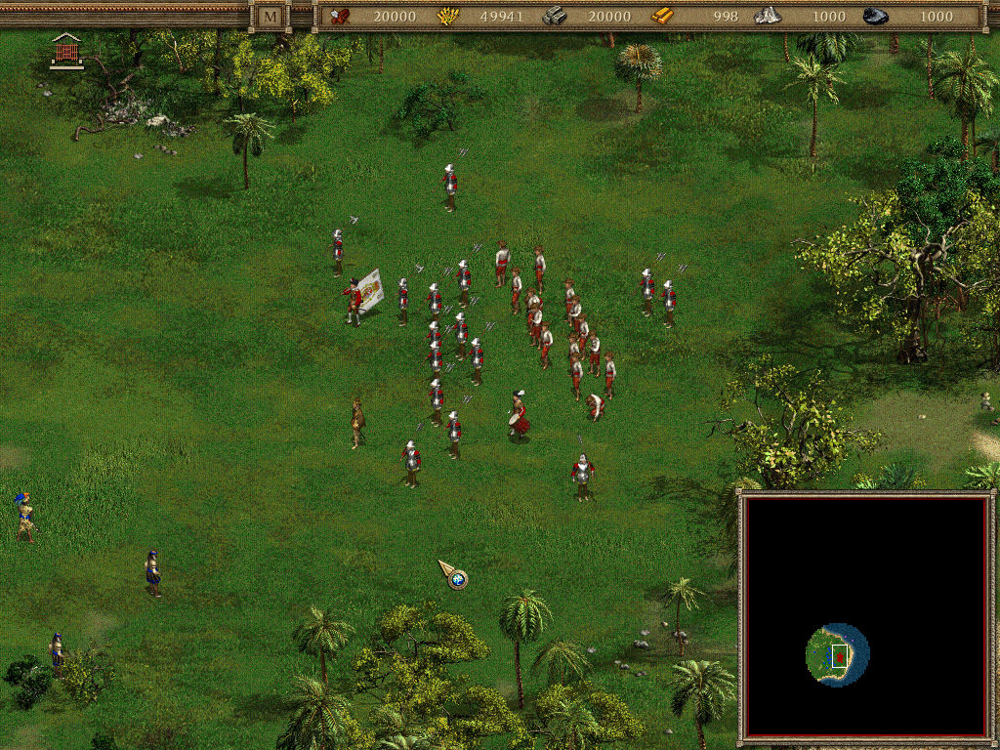
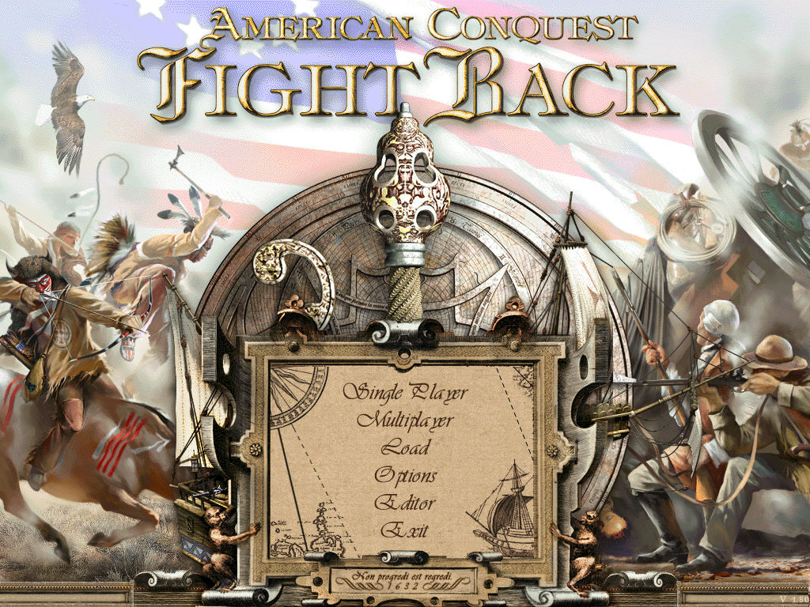
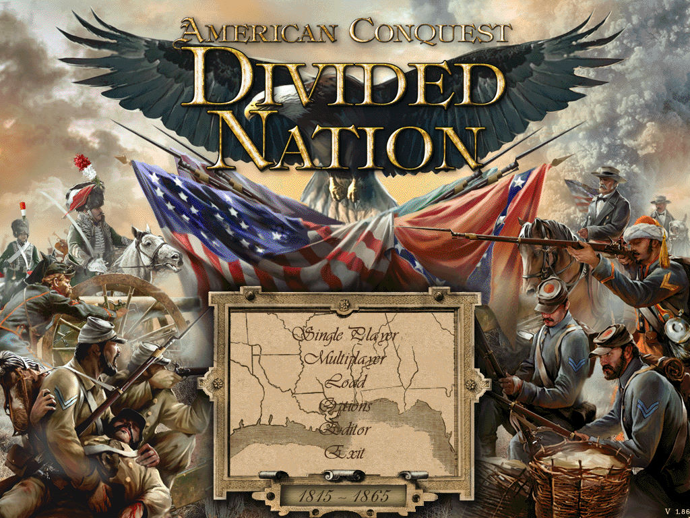

名稱：征服美洲 (American Conquest，簡中／英文版)
簡介：GSC 2002年出品的即時戰略遊戲，由CDV代理發行，2003年由東方娛動簡中化並代理發
行。2003年與2006年分別推出「危機任務／反擊（Fight Back）」以及「戰國時代／
分裂國家（Divided Nation）」獨立資料片 [待補]。




備註：本版缺主程式簡中光碟。
保護：無
備註：簡中版主程式為1.46版，資料片沒有中文版。
檔案：chs.rar = 主程式簡中化檔